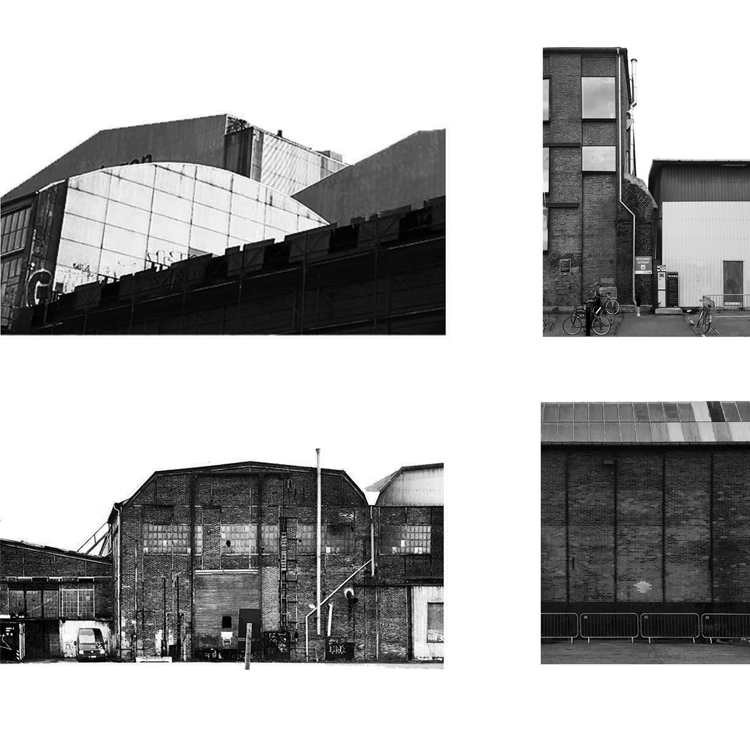
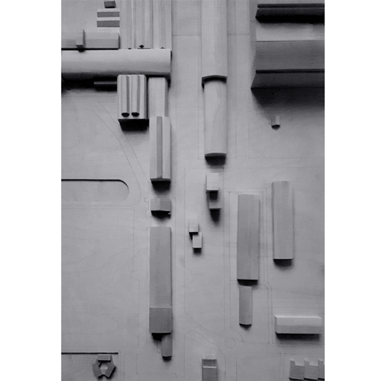
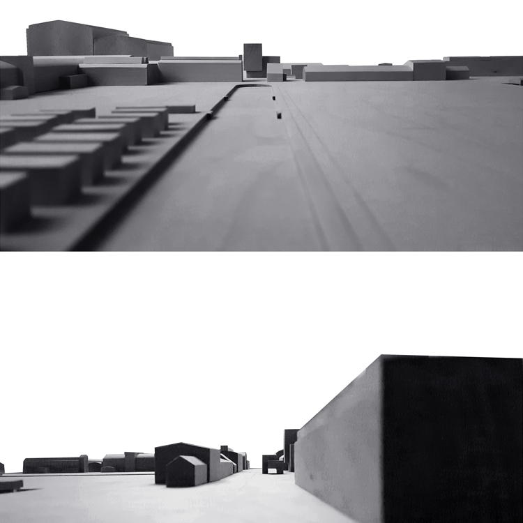
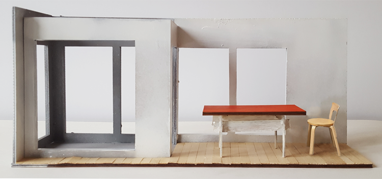
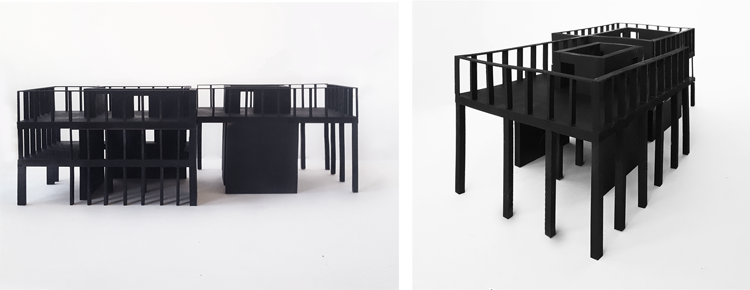
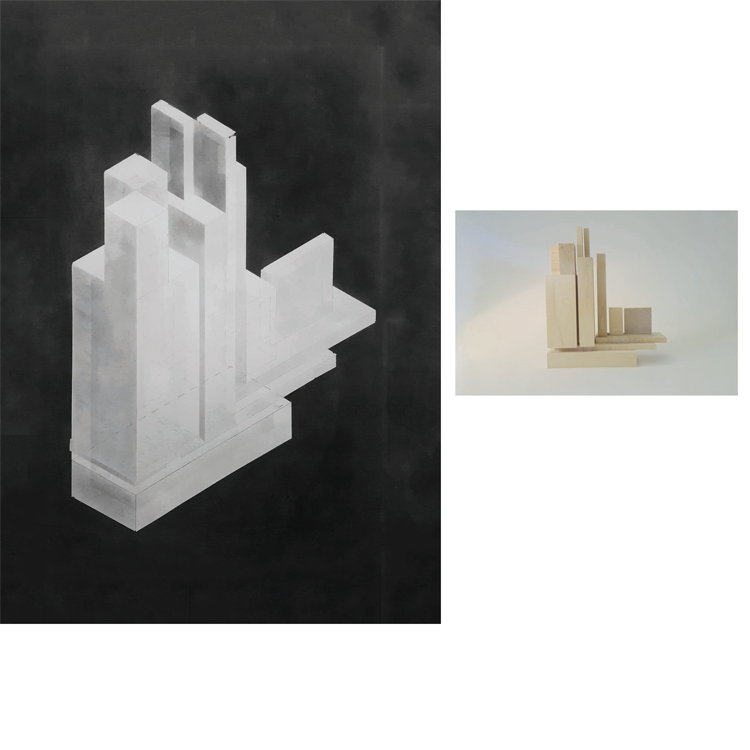
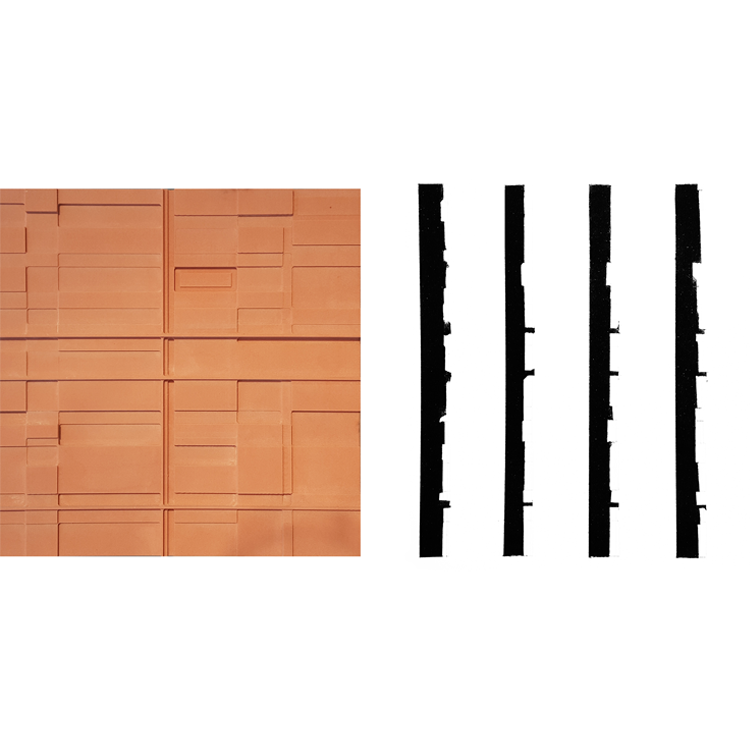

- EN TIL EN
-
DET VERTIKALE HUS
The assignment was to make a proposal for vertical living at Refshaleøen.
The area is characterized by its industrial history. Buildings are arranged
in a grid like pattern with large structures.
The project should contain housing and studios for artists who could lead the way
for the future development of the area. Therefore good light capabilities, a workshop,
a cafe and an exhibition space was included in the project. The shapes of the buildings were
intended to lead people into the area, and the facade pattern was inspired by the lines in
the industrial fasades nearby. Studios were located in a north/east direction that enables colder
light while living spaces were located in a south/west direction that enables warmer light.
alpha

alpha

alpha

alpha

alpha

alpha

alpha

alpha
alpha